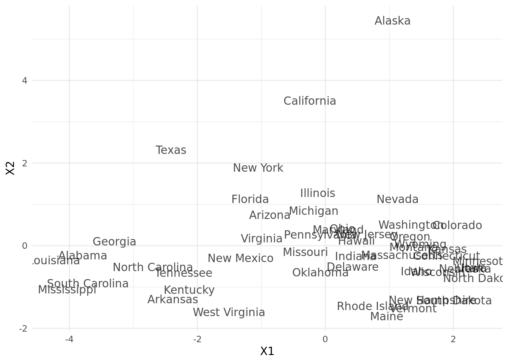
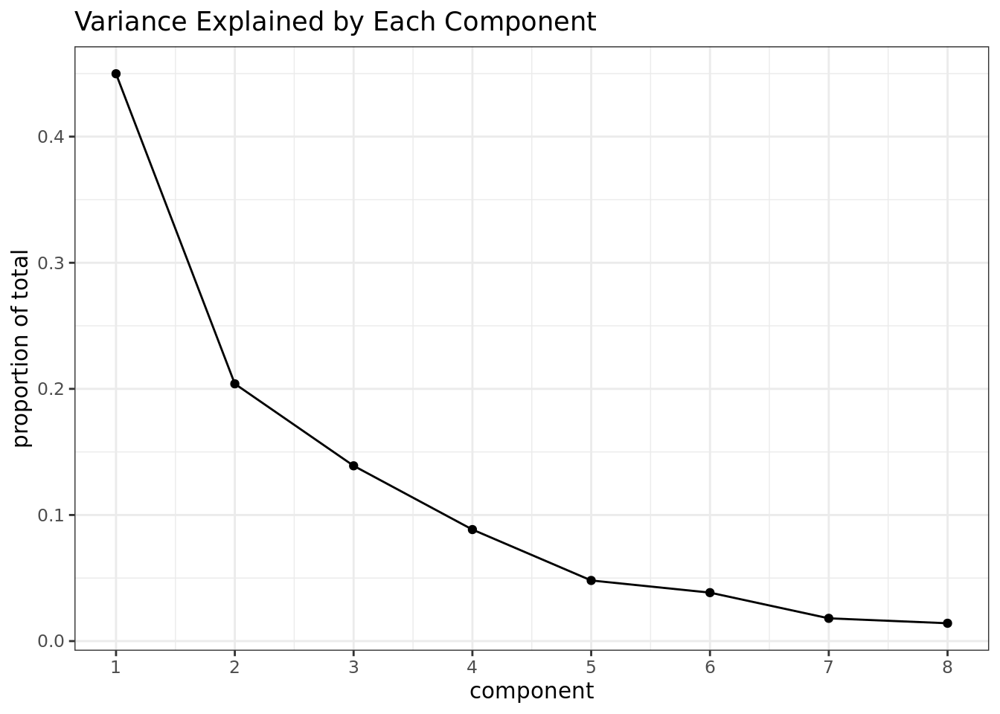

library(ggplot2)Principal Components Analysis
Recall:
Empirical covariance matrix:
\[ S = \frac{1}{n} \Sigma_{i=1}^n X_i X_i^\top - \bar{X}\bar{X}^\top \\ ~~~~~~~~~~~~~= \frac{1}{n} \Sigma_{i=1}^n (X_i - \bar{X})(X_i - \bar{X})^\top \\ \]
Or, if we let \(X\) be the \(n \times d\) matrix of covariates, and \(\it{1}\) be the \(n \times 1\) vector of all 1s, then:
\[ S = \frac{1}{n} X^\top X - \frac{1}{n^2} X^\top \it{1}\it{1}^\top X \]
# we have some data, and we want to reduce dimensions
head(state.x77) Population Income Illiteracy Life Exp Murder HS Grad Frost Area
Alabama 3615 3624 2.1 69.05 15.1 41.3 20 50708
Alaska 365 6315 1.5 69.31 11.3 66.7 152 566432
Arizona 2212 4530 1.8 70.55 7.8 58.1 15 113417
Arkansas 2110 3378 1.9 70.66 10.1 39.9 65 51945
California 21198 5114 1.1 71.71 10.3 62.6 20 156361
Colorado 2541 4884 0.7 72.06 6.8 63.9 166 103766X <- as.matrix(state.x77)
X <- scale(X, center = TRUE, scale = TRUE)
# compute covariance matrix
# v slight differences from `cov(X)` - Bessel's correction? Or just float point?
covmat <- function(M) {
M <- as.matrix(M)
n <- nrow(M)
ones <- matrix(1, nrow = n, ncol = 1)
S <- (1/n) * (t(M) %*% M) - (1/(n^2)) * (t(M) %*% ones %*% t(ones) %*% M)
return(S)
}
S <- covmat(X)
# eigen/spectral decomposition
## singular value decomposition - `svd(X)` - would also work
s <- eigen(S)
eigenvals <- s$values
eigenvecs <- s$vectors
# sort eigenvectors by eigenvalues, decreasing
# already done for us!
order(eigenvals, decreasing = TRUE)[1] 1 2 3 4 5 6 7 8# project X onto the span of each eigenvector
Y <- X %*% eigenvecs
# # (to do it like the lecture notes)
# k <- 2 ## n dims to keep
# Y <- matrix(nrow = nrow(X), ncol = k)
# Pk <- matrix(eigenvecs[, 1:k], nrow = nrow(eigenvecs))
# for (i in 1:nrow(X)) {
# Xi <- matrix(X[i, ], nrow = ncol(X))
# Y[i, ] <- t(Pk) %*% Xi
# }
dat <- data.frame(Y)
dat$id <- rownames(X)
ggplot(dat, aes(x = X1, y = X2)) +
geom_text(aes(label = id), alpha = 0.7) +
theme_minimal()
# compared to native R solution
# same but different signs, has no practical impact
# (prcomp uses `svd` internally, slight differences in procedure from `eigen`)
dat2 <- data.frame(prcomp(state.x77, scale. = TRUE)$x)
dat2$id <- rownames(dat2)
ggplot(dat2, aes(x = -PC1, y = PC2)) +
geom_text(aes(label = id), alpha = 0.7) +
theme_minimal()Proportion of Explained Variance
total_variance <- sum(eigenvals)
tve <- data.frame(
component = seq(1, length(eigenvals)),
eigenvalue = eigenvals,
proportion = eigenvals / total_variance,
cumulative = cumsum(eigenvals / total_variance)
)
print(tve) component eigenvalue proportion cumulative
1 1 3.5269177 0.44986195 0.4498619
2 2 1.5992808 0.20398990 0.6538519
3 3 1.0897023 0.13899264 0.7928445
4 4 0.6933541 0.08843803 0.8812825
5 5 0.3769489 0.04808021 0.9293627
6 6 0.3013124 0.03843271 0.9677954
7 7 0.1415598 0.01805610 0.9858515
8 8 0.1109239 0.01414846 1.0000000# scree plot
ggplot(tve, aes(x = component, y = proportion)) +
geom_point() +
geom_line() +
scale_x_continuous(breaks = seq(1, nrow(tve))) +
labs(title = "Variance Explained by Each Component",
x = "component",
y = "proportion of total") +
theme_bw()
Interpreting the Components
In the lecture, there is an example of a PCA analysis where someone ran PCA and then tried to interpret each component as a category. Such an analysis results in a qualitative/descriptive output that might inform a business strategy (or maybe policy for this particular dataset?).
It makes some sense to do this - imagine you only have 2 features so there are only 2 elements in each component vector. Then you could plot them each as a point in the xy-plane, where the x-axis corresponds to feature 1 and the y-axis corresponds to feature 2.
If the first component vector has a relatively small first coordinate and relatively large second coordinate, than the resulting point will be close to the x-axis, implying the second feature is more important for this coordinate. The opposite is true if the first coordinate is large relative to the second coordinate.
Further, if we consider that the components become the coefficients that multiply with the values of \(X\) to produce \(Y\) (\(Y = Xp\)), it makes sense to investigate them as we might a linear regression.
This implies a strategy of looking at the elements in each component vector and trying to determine how the values which are largest in magnitude work together to suggest some natural group.
An alternative approach appears to be to calculate the correlation between the \(Y_i\)’s and the \(X_i\)’s (i.e., cor(X, Y)), and to interpret the correlations.
See: https://online.stat.psu.edu/stat505/lesson/11/11.4
There is apparently a whole sub-field (factor analysis) doing things like this. The idea is to make the principal components more interpretable by rotating them so that, while there correlations are preserved, a “simpler structure” is found where different factors tend to load different variables. Larger and smaller values are exaggerated so differences become more apparent.
See:
For simplicity, I will just look at the raw components. Below are the first 3 components. We could try to interpret them, for example: the second component has large values for Population, Income, and Area.
Maybe we will call this the population-income-area (?) component, and we can say that state’s that have a large second component (\((XP)_{i,2}\)) can be grouped together and categorized as such. Or maybe we just want to say that population-income-area is an important way to categorize states.
We might be able to perform a better analysis if we rotate the components.
# inspecting the components
rownames(eigenvecs) <- colnames(X)
eigenvecs[, 1:3] [,1] [,2] [,3]
Population -0.12642809 0.41087417 0.65632546
Income 0.29882991 0.51897884 0.10035919
Illiteracy -0.46766917 0.05296872 -0.07089849
Life Exp 0.41161037 -0.08165611 0.35993297
Murder -0.44425672 0.30694934 -0.10846751
HS Grad 0.42468442 0.29876662 -0.04970850
Frost 0.35741244 -0.15358409 -0.38711447
Area 0.03338461 0.58762446 -0.51038499